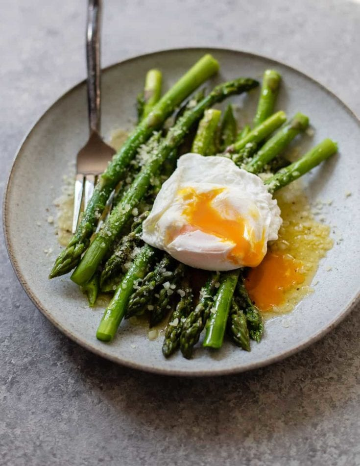

Asparagus Eggs

Description
An asparagus and eggs breakfast is a delightful combination of flavors and textures. Tender, lightly sautéed
asparagus spears are served alongside perfectly cooked eggs, which can be poached, scrambled, or fried. The vibrant
green of the asparagus contrasts beautifully with the rich, golden yolks of the eggs.
A sprinkle of salt, pepper, and perhaps a dash of lemon juice or grated Parmesan enhances the dish’s freshness. This
nutritious meal is not only visually appealing but also packed with vitamins and protein, making it a delicious and
energizing start to the day.
Ingredients
- 1 tablespoon olive oil
- 1 garlic clove, finely chopped
- 8 thin-stemmed asparagus stalks, trimmed
- 2 large eggs
- salt and freshly ground black pepper to taste
- 1 pinch red pepper flakes (optional)
Steps
- Heat a small skillet over medium-high heat. Add olive oil and garlic; cook and stir until garlic is fragrant,
about 30 seconds.
- Add asparagus and cook until fork-tender, turning asparagus often to ensure even cooking, about 4 minutes.
- Spread asparagus out and crack 2 eggs over the asparagus. Cover with lid and cook until egg whites are firm and
yolk is done to desired consistency, about 4 minutes.
- Season with salt and pepper; sprinkle with red pepper flakes and serve immediately.